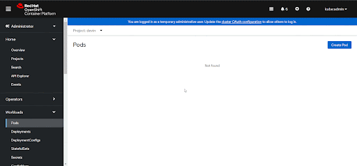
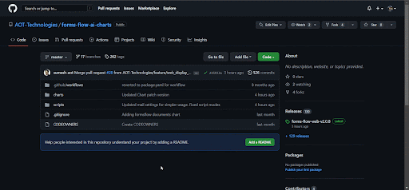
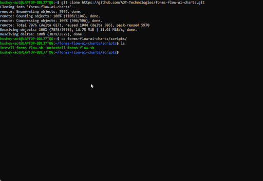
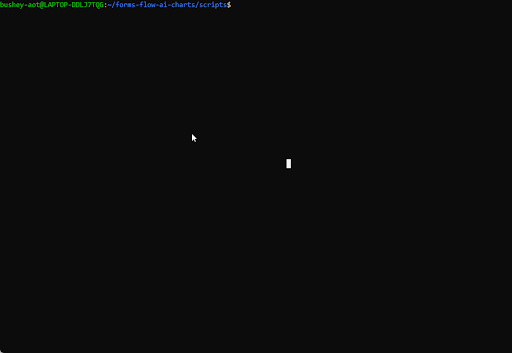
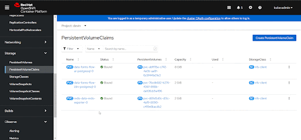

<article class="docs-article" id="section-1">
  <section class="docs-section" id="installation-1">

      <h1 class="docs-heading">Quick Installation</h1>
      <hr>
      <p>There are install and uninstall bash scripts included in the forms-flow-ai-charts GitHub repository that allow you to install and uninstall 
        formsflow.ai through a short series of prompts. Once the prerequisites are met, then the forms-flow-ai-charts repository can be cloned into 
        your local machine and the scripts can be run within the 'scripts' directory.
      </p>
      <br>
      <ol>
        <li>Log in to a Kubernetes cluster using the command line interface</li>
        <p><br><p>
        <li>Clone the forms-flow-ai-charts GitHub repository and change directories into the 'scripts' directory.</li>
        <p><br><p></p>
        <li>Run the install or uninstall script and follow the prompts.</li>
        <p>Install Script</p>
        <pre>
          <code class="hljs">
            bash install-forms-flow.sh
          </code>
        </pre>
        <p><br><p></p>
        <p>Uninstall Script</p>
        <pre>
          <code class="hljs">
            bash uninstall-forms-flow.sh
          </code>
        </pre>
        <p><br><p></p>
        <p><em>Note: Persistent Volume Claims must be manually deleted from your Kubernetes project</em></p>
        <p><br><p></p>
      </ol>

  </section>
</article>